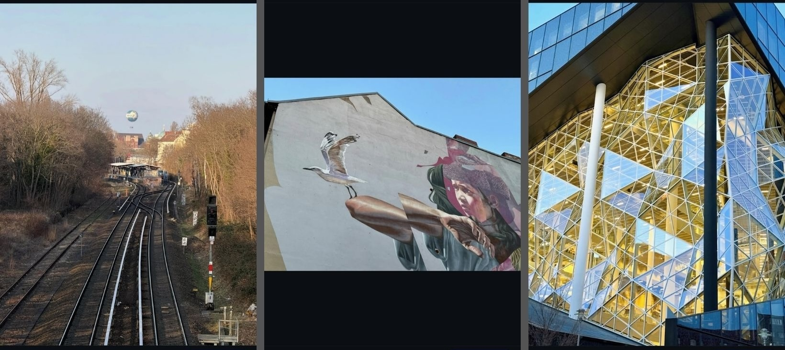
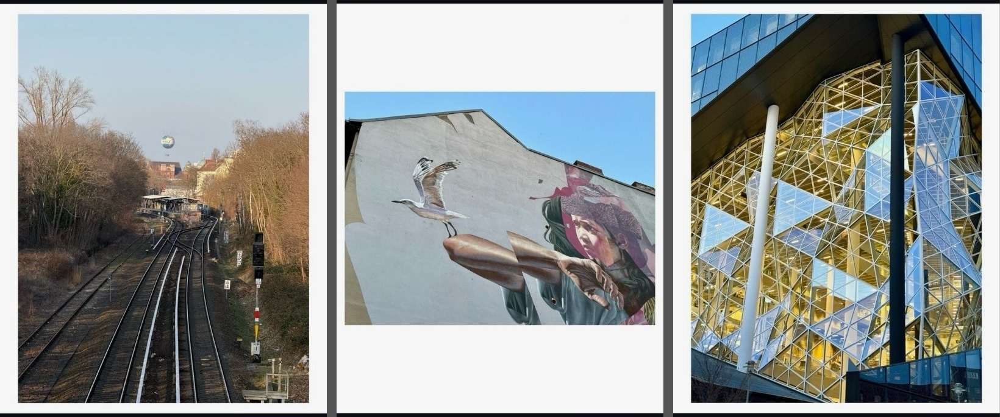
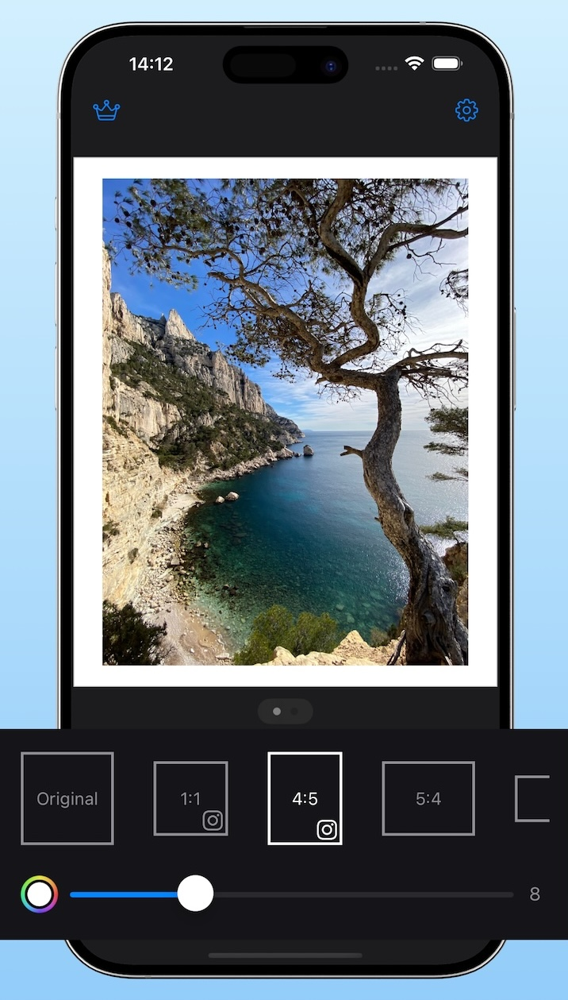

How to prepare Instagram carousel photos on iPhone
Make every image the same size, keep the full composition, and post a cleaner carousel without cropping.
Instagram carousel posts work best when every slide feels aligned. The problem is that photos often start with different shapes, which can make the set feel uneven or force awkward crops.
Simple Border solves that by adding space around each image instead of cutting anything off. You can choose one ratio, use one border style, and export a consistent set for Instagram.
Before and after carousel examples


Batch-prepare a carousel with one consistent layout
For an Instagram carousel, consistency matters more than any single image. Simple Border lets you prepare multiple photos with the same aspect ratio and border treatment, which is useful for portfolio posts, product shots, travel recaps, and before-and-after sets.
Steps
- Pick the photos for your carousel
Choose the images you want to post together and decide whether the final carousel should be square (1:1) or vertical 4:5. - Open them in Simple Border
Select multiple photos so you can work through the set with one visual direction instead of editing each image from scratch. - Choose one aspect ratio for the whole set
Use the same format across every image so Instagram shows the carousel cleanly from slide to slide.
- Set one border style
Use the same border thickness and color on each photo. White feels editorial, black feels stronger, and custom colors can match a brand or campaign. - Export the full set
Save the results, review the sequence, and upload them to Instagram in order.
Why this works well for carousels
- Consistent framing keeps the post looking intentional.
- No cropping means wide, tall, and mixed-orientation photos can live in the same carousel.
- Batch export saves time when you are preparing a full set instead of one image.
- Cleaner presentation makes portfolio, brand, and storytelling posts feel more polished.
Best settings for Instagram carousel photos
- Use 4:5 if you want more screen space. It usually looks larger in the Instagram feed than square.
- Use square for a classic grid look. It is easier to balance very mixed image sets.
- Keep border thickness uniform. This is one of the fastest ways to make the carousel feel cohesive.
- Review the first slide carefully. The first image often sets the visible size for the rest of the carousel.
- Think in sets, not single images. A carousel usually looks stronger when every slide follows the same visual system.
Simple Border is especially useful when your carousel includes portrait, landscape, and square photos that still need to feel like one post.